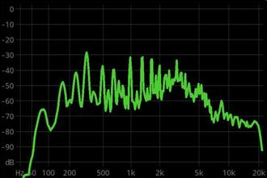
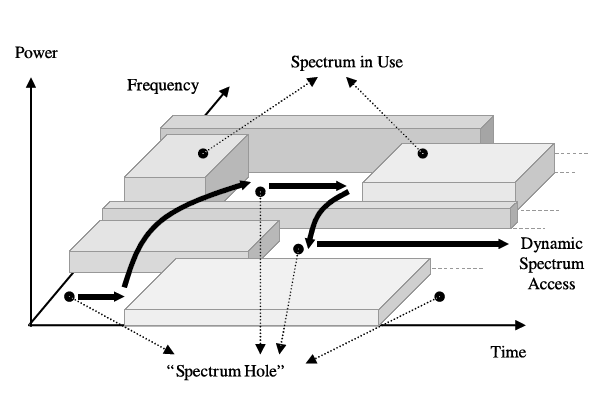
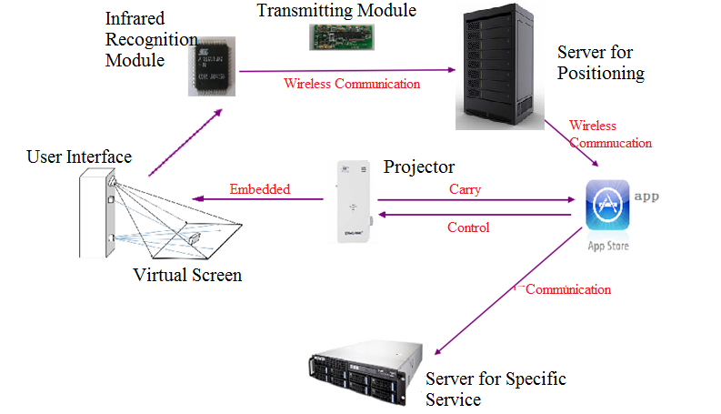
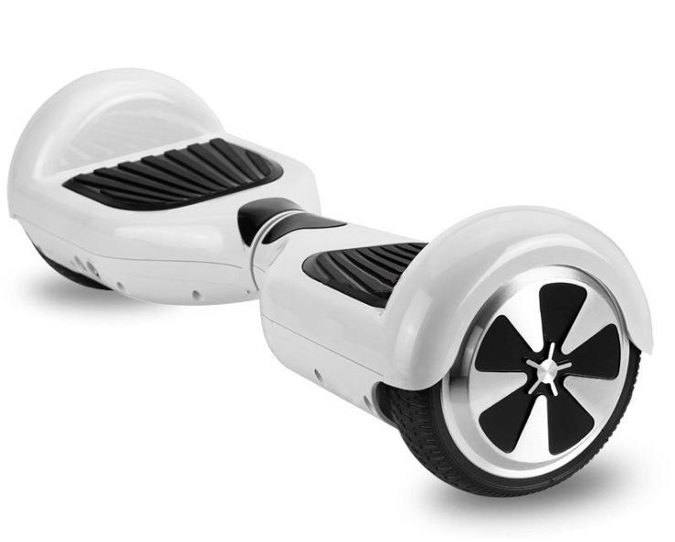

I am now a first year M.S student in Stanford University majoring EE.
News
April, 2016: Sensing and Recognition for Multiple Primary Power Level Scenario with Noise Uncertainty accepted by IEEE Transactions on Vehicular Technology.
October, 18th, 2015: Awarded National Scholarship for the third time for outstanding performance in school study.(link).
September, 7th, 2015: Paper Spectrum Sensing and SNR Walls When Primary User Has Multiple Power Levels accepted by IEEE/CIC ICCC 2015.
May, 24th, 2015: Project chip bank awarded First Prize in ”Challenge Cup” Beijing College Student Curricular Academic Science
and Technology Works
March, 2015: Started the program GLRT based Spectrum Sensing When Primary User Has Multiple Power Levels .
October, 13th, 2014: Awarded National Scholarship for the second time for outstanding performance in school study.
Publications

Chen Qian, Han Qian, Feifei Gao. Spectrum Sensing and SNR Walls When Primary User Has Multiple Power Levels
Accepted by: IEEE/CIC ICCC 2015.
[ paper click here ]
About cognitive radio and statistical signal processing. Proposed the power recognition strategy and analyzed SNR wall phenomena in MPTP scenario with noise uncertainty.

Chen Qian, Feifei Gao, Han Qian Sensing and Recognition for Multiple Primary
Power Level Scenario with Noise Uncertainty
Submitted to: IEEE Transaction on Vehicular Technology (TVT).
[ paper click here ]
Extended the research of paper Spectrum Sensing And SNR Walls When Primary User Has Multiple Power Levels, analyzed abundant underlying phenomena especially power ambiguity.
Proposed cooperative recognition to increase the sensing performance.
Projects

Interactive Projection Screen(click here for video)
The project turned a static projection into interactive screen owning all function of a touch screen.
I took the responsibility of increasing the accuracy of the system and communiation amog all modules.

Self-balancing Car Based on Arduino(click here for video)
We designed a self-balancing car using Arduino programming, which resembles the popular Segway.
I took the responsibility of realizing the speed control of it, including turning, accelerating, deceleratting and forwarding.
Awards
2015
National Schorlarship (Rank 1 of 589)
First prize in "Challenge Cup" Beijing College Student Curricular Academic Science and Technology Works (top 5% of over 1000 teams)
Second Prize in National English Competition for College Students (Top 1.5% of 2500)
2014
National Scholarship(Rank 6 of 600)
Second Prize in National English Competition for College Students (Top 1.5% of 2700)
National first prize on "CCTV STAR OF OUTLOOK English Talent Competition" (Rank 1 of 123)
2013
National Scholarship (Rank 3 of 597)
Second prize in Beijing Division on "National Undergraduate Mathematical Contest" (Top 7% of 30,000)